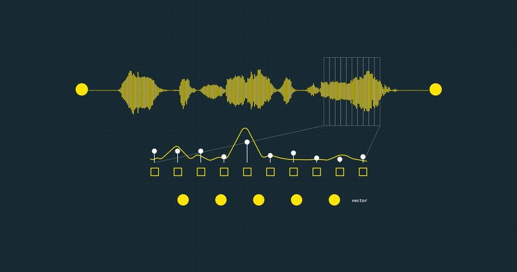
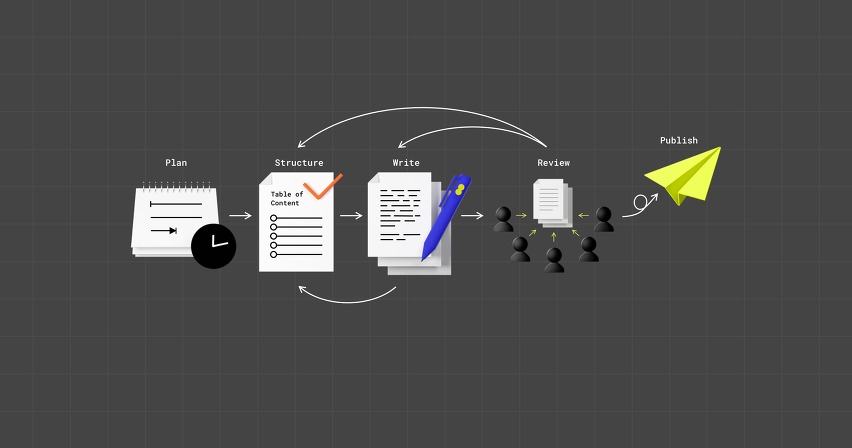
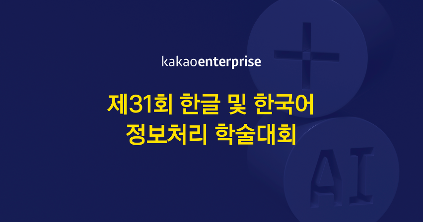
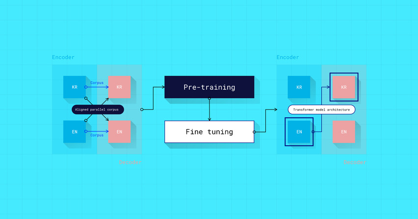
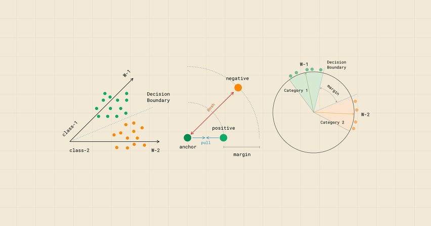

Tech log
AI에게 어떻게 음성을 가르칠까?
시작하며 인간은 귀로 듣고, 입으로 말하여 타인과 의사소통합니다. 나와 대화할 수 있는 존재를 창조하고 싶다는 바람은 많은 사람들이 오래전부터 상상하고, 소설로 쓰고, 연구해 왔습니다. 오늘날 그 바람은 음성을 듣고 정보를 이해하고, 음성을 만들어 정보를 전달하는 대화형 인공지능(Artificial Intelligence, 이하 AI)의 시대가 도래하게 됨으로써 그 결실을 맺었습니다. 기계가 사람의 음성을 듣는 음성인식(Speech recognition)은 AI의 귀이고, 기계가 사람의 음성으로 말하는 음성합성(Speech synthesis)은 AI의 입이라고 할 수 있습니다.
더보기 ↗Tech log
카카오 i의 작고 소중한 힐링
시작하며 서기 2020년! 우리는 접촉이 공포가 되는 극단적 언택트(Untact) 시대를 맞이하고 말았습니다. 사람보다는 키오스크, 전화보다는 배달 앱, 발품보다는 온라인 쇼핑이 편해진 건 그다지 새로운 이야기도 아니지만, ‘안’하는 것과 ‘못’하는 것은 아주 다르니까요. 실생활의 불편함은 물론이고 불안, 무기력, 우울감을 호소하는 코로나 블루까지 우리의 일상은 꽤 많이 바뀌었습니다. 저 역시도 재택근무로 외로움이 짙어질 즈음에 모든 콘택트 요청이 단비 같았죠. 설령 그게 업무 요청일지라도... (언빌리버블!) 오늘은 언택트 시대의 힐링 서비스를 통해 사람들의 위로가 되고 싶은 마음을 전하고자 합니다. 기술 공유보단 옆집 사는 기획자 이야기로 편히 읽어주세요.
더보기 ↗Krew Talk
기술 문서 작성 5단계
시작하며 안녕하세요. 카카오엔터프라이즈에서 테크니컬 라이터 업무를 진행하고 있는 테크니컬커뮤니케이션 셀의 Crystal(김유리)과 Sandy(차신영)입니다. :) 이전 포스팅(Technical Writer에서 Technical Communicator로…)에서는 Technical Communication에 대한 정의와 역사 그리고 어떤 업무를 하는지에 대해서 알아보았습니다. 지난번에도 잠깐 언급했듯이 해외에서는 테크니컬 라이팅의 학위 프로그램도 존재하며, 학계에서는 관련 프로세스가 확립 되어있는데요. 이를 바탕으로, 이번 포스트의 주제는 기술적인 정보를 특정 독자들에게 정확하고 명확하게 전달하기 위해 어떤 프로세스로 진행해야 하는지에 대해 간단히 말씀드리려고 합니다. Kieran Morgan의 Technical Writing Process라는 책과 소프트웨어 사용자 문서 프로세스(Software user documentation process, ISO/IEC 15910) 표준을 기반으로 한, 카카오엔터프라이즈의 기술 문서 작성 과정을 지금부터 소개해드리겠습니다. 과연 여러분이 예상하는 기술 문서 생성 과정과 같을지, 한번 생각하고 읽으시면 더 흥미롭게 읽으실 수 있을 것 같습니다. :)
더보기 ↗AI Research
기계 독해를 이용한 웹 기반 오픈 도메인 한국어 질의응답
시작하며 카카오엔터프라이즈 AI Lab(최동현, 김응균)이 성균관대학교(신동렬)와 함께 쓴 논문 ‘기계 독해를 이용한 웹 기반 오픈 도메인 한국어 질의응답’이 제31회 한글 및 한국어정보처리 학술대회에 실렸습니다. 한글날을 맞이해 매년 10월마다 열리는 한글 및 한국어정보처리 학술대회는 전산언어학과 언어학, 인공지능과 관련된 다양한 주제의 연구 논문을 다루고 있습니다. AI Lab은 기계 독해를 이용한 웹 기반 오픈 도메인 한국어 질의응답 시스템을 제안했습니다. 시스템에 사용자 질의가 입력되면, 기존의 검색 엔진으로 최대 1,500개의 문서를 기계 독해 방식으로 실시간으로 분석합니다. 그런 뒤, 각 문서에서 찾은 답을 종합해 최종 답변을 도출합니다. 실험 결과, 제안된 시스템의 평균 실행 시간은 2초 이내였으며, 인간이 기록한 점수 대비 86%에 달하는 준수한 성능을 냈습니다. AI Lab이 제안한 시스템의 데모는 카카오의 NLP API 페이지에서 확인할 수 있습니다.
더보기 ↗Tech log
카카오 i 번역 성능 향상 실험 : 대규모 말뭉치를 활용한...
시작하며 사전학습(pretraining)은 데이터양이 절대적으로 적은 상황에서 적용하는 기법입니다. 문제(본 훈련)에서 제시되는 것과 유사한 형태의 데이터로 모델을 사전학습시키면 본 훈련에 효과적인 매개변수(parameter) 초기값 확보에 크게 도움이 되어서죠. 오늘날 대규모 말뭉치(corpus)를 사전학습한 언어 모델(language model)1이 자연어처리(NLP)에서 주류로 자리2하게 된 것은 바로 이런 효과 덕분입니다.
더보기 ↗Our story
AI 기술과 전시의 특별한 만남, 이랜드 THE PRIZE 노벨상
오늘날 가장 중요한 기술 중 하나로 자리잡은 AI 기술은 다양한 분야에서 사용되고 있습니다. 모빌리티, IoT, 엔터테인먼트, 헬스케어 등 우리의 생활 곳곳에 더욱 가까워진 AI의 활용 범위 역시 점차 확대되고 있는데요. 최근에는 문화 프로그램 중 하나인 전시회에서 카카오엔터프라이즈의 AI 기술이 적용되어 관람객들에게 편리함과 새로운 경험을 제공하고 있습니다. 그럼 전시회와 AI의 특별한 만남을 살펴보러 가실까요?
더보기 ↗AI Research
얼굴 인식 알고리즘 선행 연구를 소개합니다
시작하며 얼굴 인식 기술(face recognition)은 지난 수십 년간 컴퓨터 비전(computer vision)의 주요 연구 분야 중 하나로 자리매김하고 있습니다. [그림 1]처럼 시스템에 입력된 두 이미지 속 인물 간의 동일인 여부를 검증(verification)하거나, 이미지 속 인물이 내부 데이터베이스(DB)에 미리 저장된 인물 중 누구와 가장 유사한지를 식별(identification)하는 데 이 기술이 널리 활용되고 있습니다.
더보기 ↗